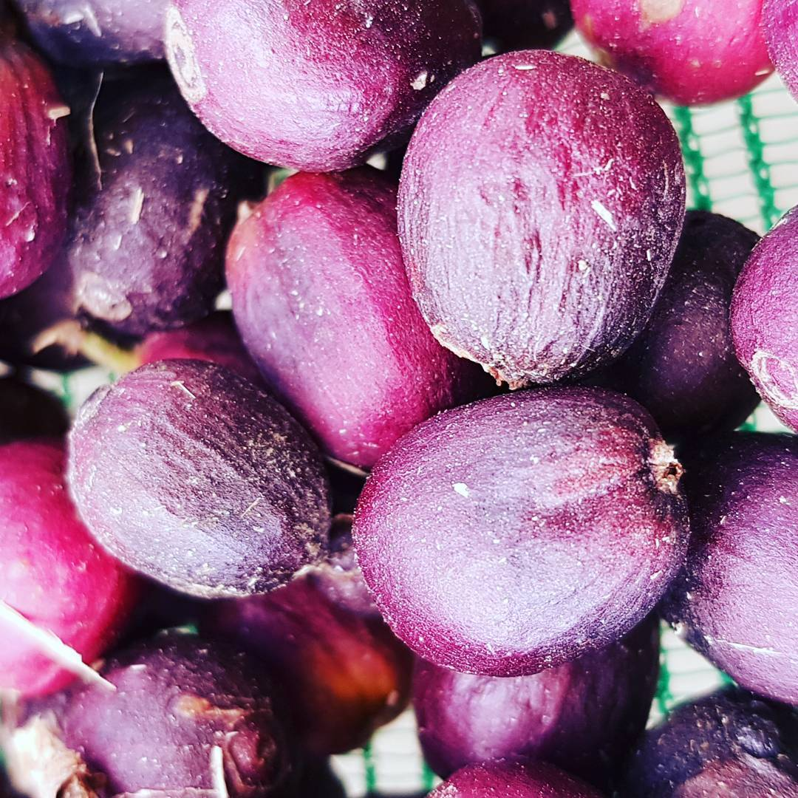
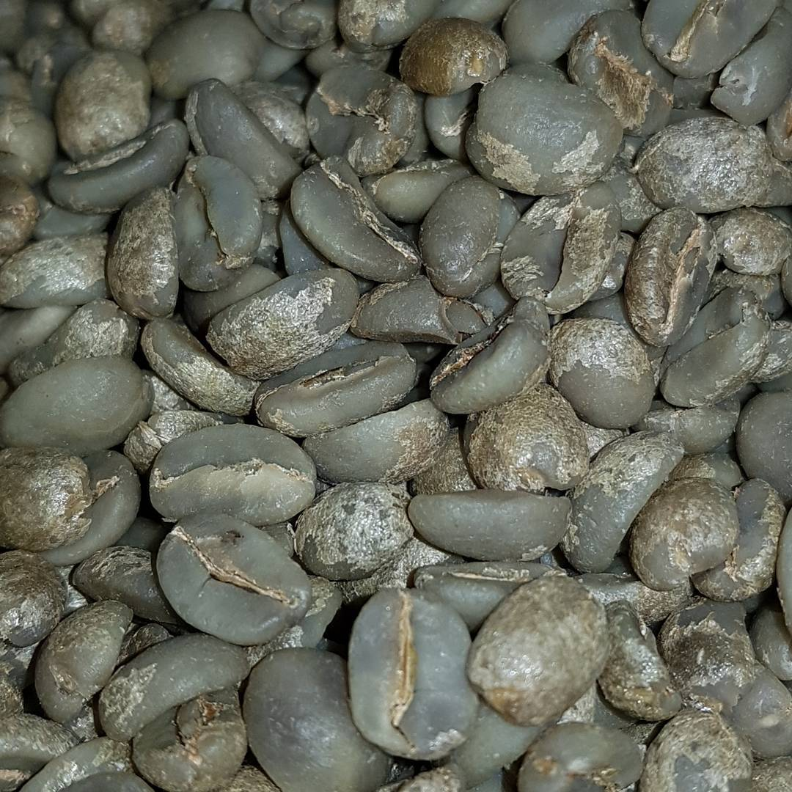

Café: Como é produzido?
Turicas aka Álvaro Justen
CapiConf 2018
13 de abril de 2018 - Curitiba/PR

$ whoami
Turicas, prazer! =)
Sigam-me os bons:
{twitter,
github,
youtube,
slideshare,
instagram}
/turicas
turicas@pythonic.cafe
Blog: turicas.info
arVO, arvoros

O Fruto

Beneficiamento: Natural vs CD

Grão cru

Torrando

Torrando com Python
Extrações